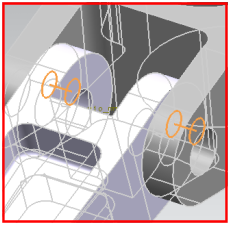

To connect individual 3D meshes together at a specified interface, use the Mesh Mating Condition command.
For example, you can use Mesh Mating Condition to:
Connect the meshes on similar bodies within an assembly.
Create identical meshes on two faces to facilitate contact definition.
